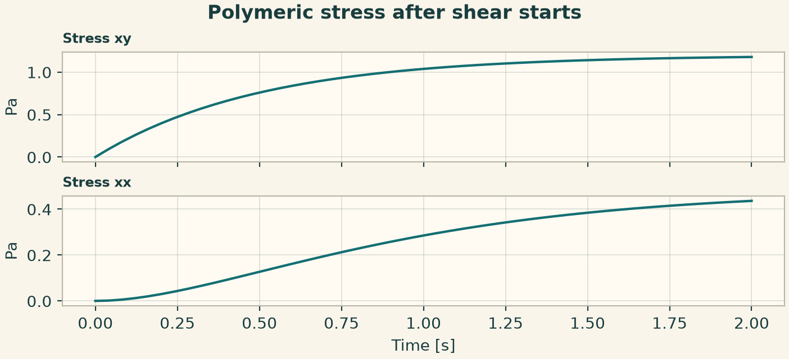
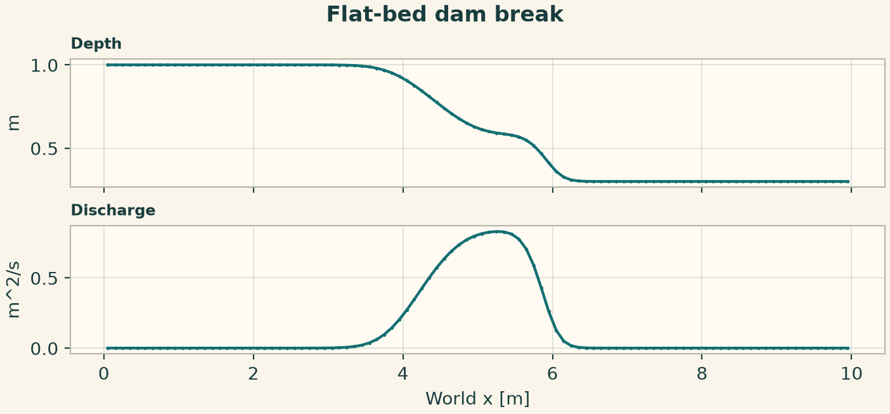
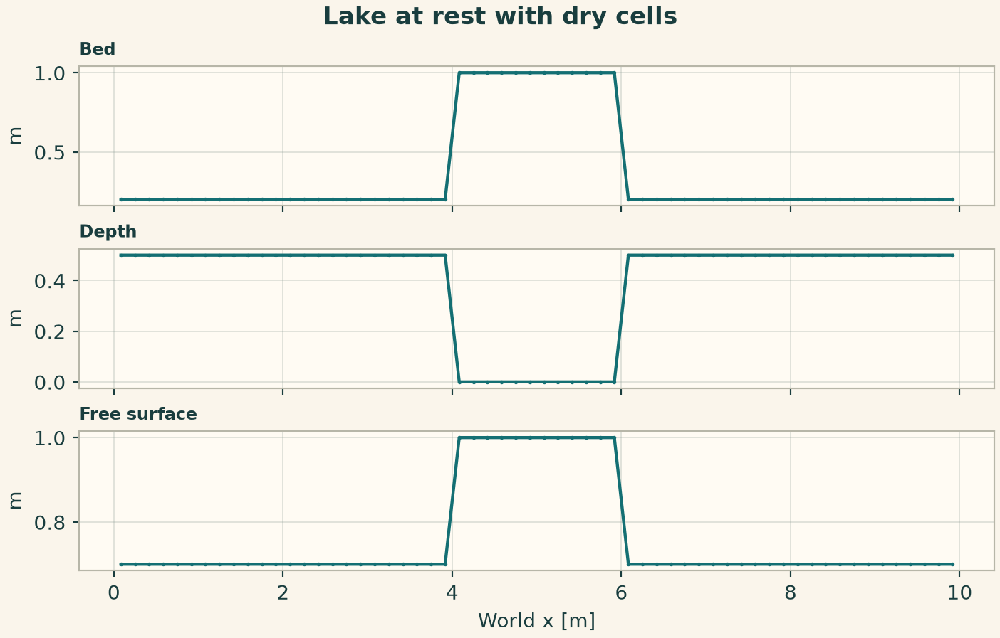
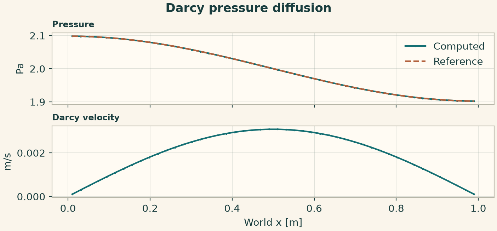
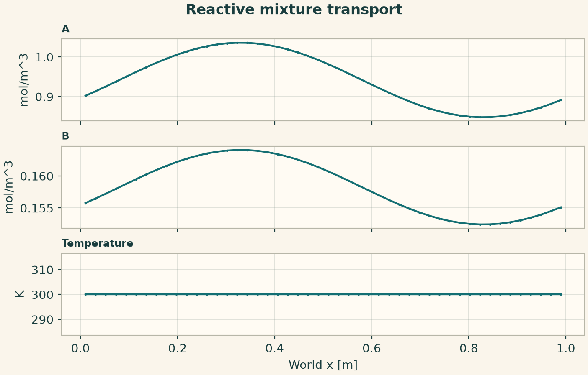
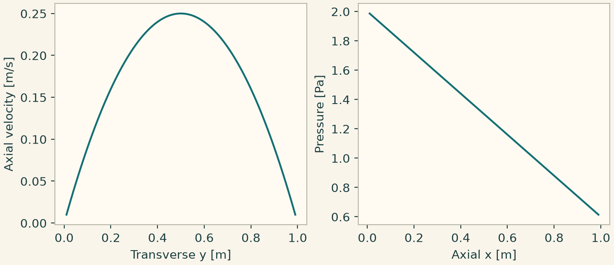
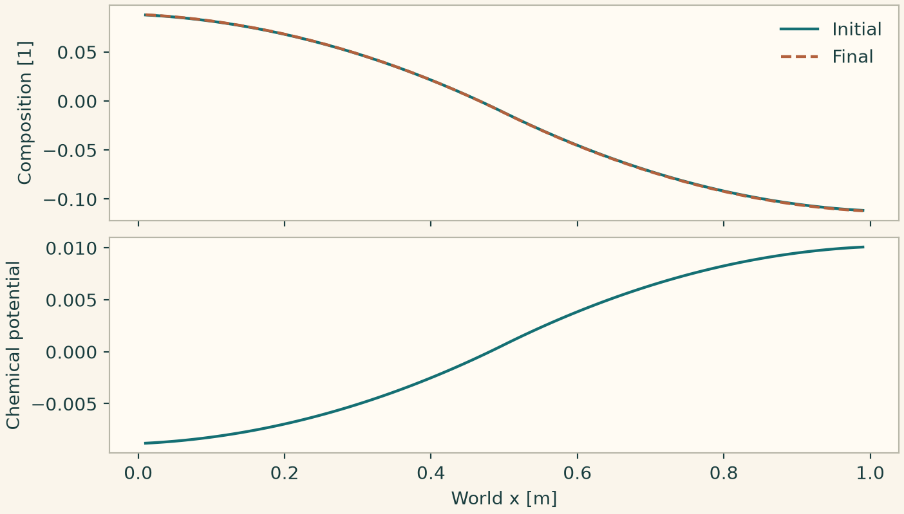

Docs › Worked physics and service recipes › Hydrodynamics recipes
6.11 Hydrodynamics recipes
6.11.1 Polymeric stress after shear starts
Prescribe a fixed shear rate. The shear stress approaches polymer viscosity times shear rate and the normal stress develops as a separate observable.
from onesim.physics.hydrodynamics import OldroydBShear, ViscoelasticStressLaw
domain = LumpedDomain()
model = OldroydBShear(
domain=domain.system,
shear_rate=0.4,
stress_law=ViscoelasticStressLaw(relaxation_time=0.5, polymer_viscosity=3),
)
t, data = history_case(
domain,
model,
dict(stress_xx=0.0, stress_xy=0.0, stress_yy=0.0),
("stress_xy", "stress_xx"),
end=2,
dt=0.01,
)
np.testing.assert_allclose(data["stress_xy"], 1.2 * (1 - np.exp(-2 * t)), atol=1e-7)
fig = history_plot("Polymeric stress after shear starts", model, t, data)
plt.show()

6.11.2 Compressible shock tube
Set conservative density, momentum and total energy. Use the gas law to derive pressure and require positive density and pressure in the physical result.
from onesim.physics.hydrodynamics import (
CompressibleEuler,
IdealGasEquationOfState,
TransmissiveBoundary,
)
line = Line(start=(0, 0, 0), end=(1, 0, 0))
model = CompressibleEuler(
domain=line.line, equation_of_state=IdealGasEquationOfState()
)
conditions = (TransmissiveBoundary(physics=model, boundary=line.boundaries.all),)
result = line_experiment(
line,
model,
dict(
density=lambda x: np.where(x < 0.5, 1.0, 0.125),
momentum=0.0,
total_energy=lambda x: np.where(x < 0.5, 2.5, 0.25),
),
FiniteVolume(convection=Rusanov()),
cells=100,
end=0.12,
dt=0.0005,
conditions=conditions,
)
assert result.field(model.density).values.min() > 0
assert result.field(model.pressure).values.min() > 0
fig = profile_figure(
"Euler shock tube", result, model, ("density", "velocity", "pressure")
)
plt.show()
6.11.3 Shallow-water dam break on a flat bed
Specify water depth and discharge on the conservative carrier. For this short run the disturbance stays inside the domain. Check positive depth and total water volume.
from onesim.physics.hydrodynamics import ShallowWater
from onesim.simulation.problem_definition.boundaries import ReflectingWall
line = Line(start=(0, 0, 0), end=(10, 0, 0))
model = ShallowWater(domain=line.line)
result = line_experiment(
line,
model,
dict(depth=lambda x: np.where(x < 5, 1.0, 0.3), discharge=0.0),
FiniteVolume(convection=Rusanov()),
cells=100,
end=0.3,
dt=0.001,
conditions=(ReflectingWall(physics=model, boundary=line.boundaries.all),),
)
depth = result.field(model.depth)
assert depth.values.min() > 0
np.testing.assert_allclose(depth.integrate().value, 6.5, atol=1e-10)
fig = profile_figure("Flat-bed dam break", result, model, ("depth", "discharge"))
plt.show()

6.11.4 Well-balanced flow over an emerged bed
The initial water level lies below the bed in the middle of the domain. Use hydrostatic reconstruction to preserve the wet/dry equilibrium and check zero discharge.
from onesim.physics.hydrodynamics import TopographicShallowWater
from onesim.numerics.fvm import HydrostaticReconstruction
from onesim.simulation.problem_definition.boundaries import ReflectingWall
line = Line(start=(0, 0, 0), end=(10, 0, 0))
bed = lambda x: np.where((x > 4) & (x < 6), 1.0, 0.2)
depth = lambda x: np.maximum(0, 0.7 - bed(x))
model = TopographicShallowWater(domain=line.line, bed_elevation=bed)
result = line_experiment(
line,
model,
dict(depth=depth, discharge=0.0),
FiniteVolume(
convection=Rusanov(),
provider=HydrostaticReconstruction(),
cell_quadrature_order=4,
),
cells=60,
end=0.12,
dt=0.002,
conditions=(ReflectingWall(physics=model, boundary=line.boundaries.all),),
)
np.testing.assert_allclose(result.field(model.discharge).values, 0, atol=1e-12)
fig = profile_figure(
"Lake at rest with dry cells", result, model, ("bed", "depth", "free_surface")
)
plt.show()

6.11.5 Pressure storage and no-flow Darcy endpoints
Use outward flux conditions at both ends. A cosine pressure profile is compatible with no flow through the walls. Darcy velocity is derived from the pressure gradient.
from onesim.physics.hydrodynamics import DarcyPressureFlow, DarcyFluxBoundary
line = Line(start=(0, 0, 0), end=(1, 0, 0))
model = DarcyPressureFlow(
domain=line.line, permeability=0.01, viscosity=1, pressure_storage=1
)
conditions = tuple(
DarcyFluxBoundary(physics=model, boundary=getattr(line.boundaries, side))
for side in ("start", "end")
)
end = 0.2
result = line_experiment(
line,
model,
dict(pressure=lambda x: 2 + 0.1 * np.cos(np.pi * x)),
FiniteDifference(gradient=CentralDifference(), diffusion=CentralLaplacian()),
cells=48,
end=end,
dt=0.001,
conditions=conditions,
)
exact = lambda x: 2 + 0.1 * np.cos(np.pi * x) * np.exp(-0.01 * np.pi**2 * end)
p = result.field(model.pressure)
np.testing.assert_allclose(p.values, exact(p.space.dof_coordinates[:, 0]), atol=1e-4)
fig = profile_figure(
"Darcy pressure diffusion",
result,
model,
("pressure", "darcy_velocity"),
reference={"pressure": exact},
)
plt.show()

6.11.6 Advection of a reacting mixture
Share the reaction network between the transported species and temperature balances. A periodic total concentration wave translates while the reaction redistributes population between species.
from onesim.physics.chemistry import ReactionIR, ReactionNetworkIR, SpeciesIR
from onesim.physics.hydrodynamics import ReactiveMixtureTransport
line = Line(start=(0, 0, 0), end=(1, 0, 0))
species = tuple(
SpeciesIR(n, 0, 1.66054e-27, composition=(("H", 1),)) for n in ("A", "B")
)
reaction = ReactionIR(
"conversion", (("A", 1),), (("B", 1),), {"kind": "constant", "value": 0.3}
)
network = ReactionNetworkIR("advecting isomers", "1", species, (reaction,))
model = ReactiveMixtureTransport(
domain=line.line, network=network, velocity=0.4, volumetric_heat_capacity=2.0
)
a, b = model.concentration("A").name, model.concentration("B").name
result = line_experiment(
line,
model,
{a: lambda x: 1 + 0.1 * np.sin(2 * np.pi * x), b: 0.1, "temperature": 300.0},
FiniteVolume(convection=Rusanov(), reconstruction=MUSCL()),
cells=48,
end=0.2,
dt=0.001,
)
integral = sum(result.field(model.field(n)).integrate().value for n in (a, b))
np.testing.assert_allclose(integral, 1.1, atol=1e-9)
fig = profile_figure(
"Reactive mixture transport", result, model, (a, b, "temperature")
)
plt.show()

6.11.7 Laminar channel with physical traction
Prescribe the exact no-slip profile on the transverse faces, including the spanwise faces, and use the full Cauchy traction at both ends. This fixes the absolute pressure through the load and checks the mixed Taylor–Hood formulation.
import numpy as np
import matplotlib.pyplot as plt
import onesimulation_plot_theme as theme
from onesim.cad.d3 import Box
from onesim.materials import NewtonianFluid
from onesim.meshing import StructuredTetrahedralMesher
from onesim.numerics import Numerics
from onesim.numerics.fem import FiniteElement, TaylorHood
from onesim.numerics.linear import SparseDirect
from onesim.numerics.nonlinear import Newton
from onesim.physics.hydrodynamics import (
FixedVelocity,
FlowTraction,
IncompressibleNavierStokes,
)
from onesim.simulation import Problem, Simulation
box = Box(length=1, width=1, height=1)
mu = 0.7
flow = IncompressibleNavierStokes(
domain=box.volume,
material=NewtonianFluid(density=1, dynamic_viscosity=mu),
)
def velocity(y):
return np.column_stack((y * (1 - y), np.zeros((len(y), 2))))
def inlet(y):
return np.column_stack((2 * np.ones_like(y), -mu * (1 - 2 * y), np.zeros_like(y)))
def outlet(y):
return np.column_stack(
(-(2 - 2 * mu) * np.ones_like(y), mu * (1 - 2 * y), np.zeros_like(y))
)
walls = (
box.boundaries.y_min
| box.boundaries.y_max
| box.boundaries.z_min
| box.boundaries.z_max
)
conditions = (
FixedVelocity(physics=flow, boundary=walls, value=velocity),
FlowTraction(physics=flow, boundary=box.boundaries.x_min, value=inlet),
FlowTraction(physics=flow, boundary=box.boundaries.x_max, value=outlet),
)
mesh = StructuredTetrahedralMesher(cells=(2, 2, 2)).generate(box)
sim = Simulation(
problem=Problem(
name="Open channel",
geometry=box,
physics=(flow,),
boundary_conditions=conditions,
),
mesh=mesh,
numerics=Numerics(
spatial=FiniteElement(element=TaylorHood()),
nonlinear_solver=Newton(
linear_solver=SparseDirect(),
absolute_tolerance=2e-11,
relative_tolerance=0.0,
),
initial_guess={flow.velocity: (0, 0, 0)},
),
)
sim.validate().require_valid()
result = sim.solve_stationary()
s = np.linspace(0.01, 0.99, 100)
cross = np.column_stack((np.full_like(s, 0.5), s, np.full_like(s, 0.5)))
axis = np.column_stack((s, np.full_like(s, 0.5), np.full_like(s, 0.5)))
u = result.field(flow.velocity).evaluate(cross)[:, 0]
p = result.field(flow.pressure).evaluate(axis)
np.testing.assert_allclose(u, s * (1 - s), atol=3e-10)
np.testing.assert_allclose(p, 2 - 2 * mu * s, atol=1e-8)
theme.use_theme()
fig, (a, b) = plt.subplots(1, 2, figsize=(7.4, 3.2), layout="constrained")
a.plot(s, u)
a.set(xlabel="Transverse y [m]", ylabel="Axial velocity [m/s]")
b.plot(s, p)
b.set(xlabel="Axial x [m]", ylabel="Pressure [Pa]")
plt.show()

6.11.8 Mass-conserving diffuse-interface evolution
Select an interface width, surface tension and mobility. Zero outward phase flux conserves composition, while chemical potential evolves as an algebraic field coupled to the composition rate.
import numpy as np
import matplotlib.pyplot as plt
import onesimulation_plot_theme as theme
from onesim.cad.d3 import Box
from onesim.meshing import StructuredHexahedralMesher
from onesim.numerics import Numerics
from onesim.numerics.fem import (
FiniteElement,
GalerkinAdvection,
GalerkinDiffusion,
Lagrange,
)
from onesim.numerics.linear import SparseDirect
from onesim.numerics.nonlinear import Newton
from onesim.numerics.time import BackwardEuler
from onesim.physics.hydrodynamics import (
CahnHilliard,
CompositionGradient,
DoubleWellFreeEnergy,
PhaseFlux,
)
from onesim.simulation import Problem, Simulation
from onesim.simulation.initial_conditions import InitialValue
box = Box(length=1, width=1, height=1)
model = CahnHilliard(
domain=box.volume,
free_energy=DoubleWellFreeEnergy(surface_tension=0.01, interface_width=0.1),
mobility=0.1,
velocity=(0.0, 0.0, 0.0),
)
def initial(x, y, z):
return 0.1 * np.cos(np.pi * x) + 0.03 * np.cos(2 * np.pi * y)
mesh = StructuredHexahedralMesher(cells=(2, 2, 2)).generate(box)
sim = Simulation(
problem=Problem(
name="Diffuse interface",
geometry=box,
physics=(model,),
initial_conditions=(InitialValue(model.composition, initial),),
boundary_conditions=(
PhaseFlux(physics=model, boundary=box.boundaries.all, value=0.0),
CompositionGradient(
physics=model, boundary=box.boundaries.all, value=0.0
),
),
),
mesh=mesh,
numerics=Numerics(
spatial=FiniteElement(
element=Lagrange(2),
quadrature_order=5,
convection=GalerkinAdvection(),
diffusion=GalerkinDiffusion(),
),
linear_solver=SparseDirect(),
time_integrator=BackwardEuler(),
nonlinear_solver=Newton(
linear_solver=SparseDirect(),
jacobian="analytic",
absolute_tolerance=1e-12,
relative_tolerance=0.0,
),
),
)
sim.validate().require_valid()
result = sim.run(start_time=0, end_time=0.04, time_step=0.01)
c = result.field(model.composition)
assert abs(c.integrate(time="last").value) < 1e-9
x = np.linspace(0.01, 0.99, 100)
points = np.column_stack((x, np.full_like(x, 0.35), np.full_like(x, 0.55)))
theme.use_theme()
fig, (a, b) = plt.subplots(
2, 1, sharex=True, figsize=(7.2, 4.1), layout="constrained"
)
a.plot(x, c.evaluate(points, time=0), label="Initial")
a.plot(x, c.evaluate(points, time="last"), "--", label="Final")
a.set_ylabel("Composition [1]")
a.legend(frameon=False)
b.plot(x, result.field(model.chemical_potential).evaluate(points))
b.set(xlabel="World x [m]", ylabel="Chemical potential")
plt.show()
